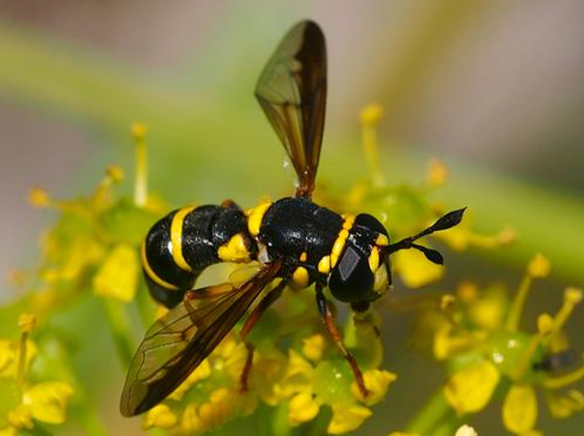

Dysdercus cingulatus es una chinche de coloración rojiza o anaranjada, con manchas negras en las alas y marcas claras en la región torácica. Se alimenta mediante un aparato bucal picador-chupador, principalmente de semillas y frutos de algodón y otras plantas. Es reconocida por su importancia agrícola debido a los daños que ocasiona en los cultivos.